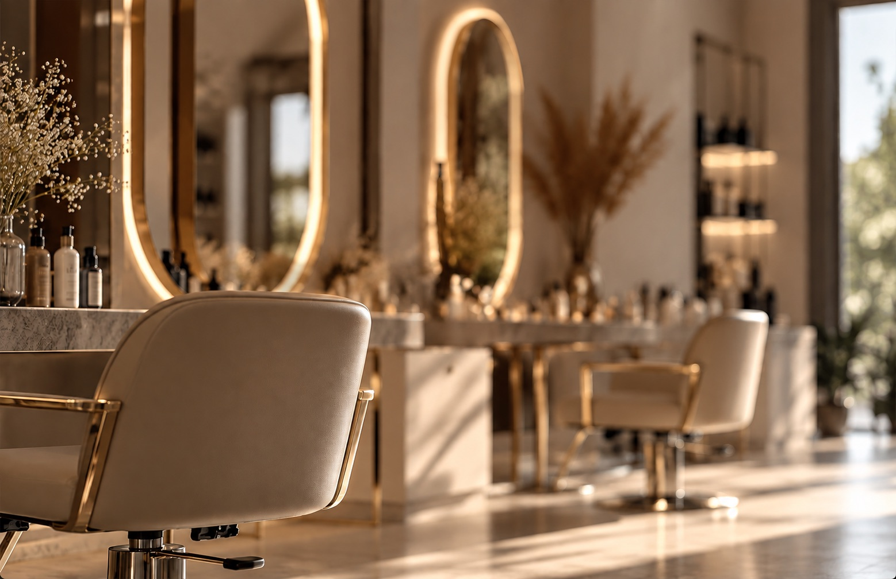
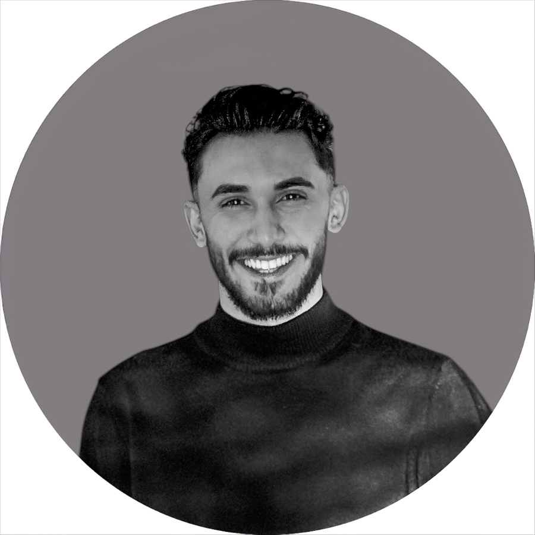
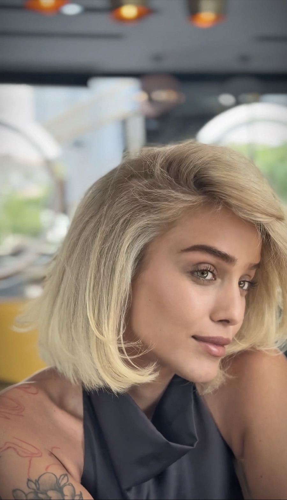
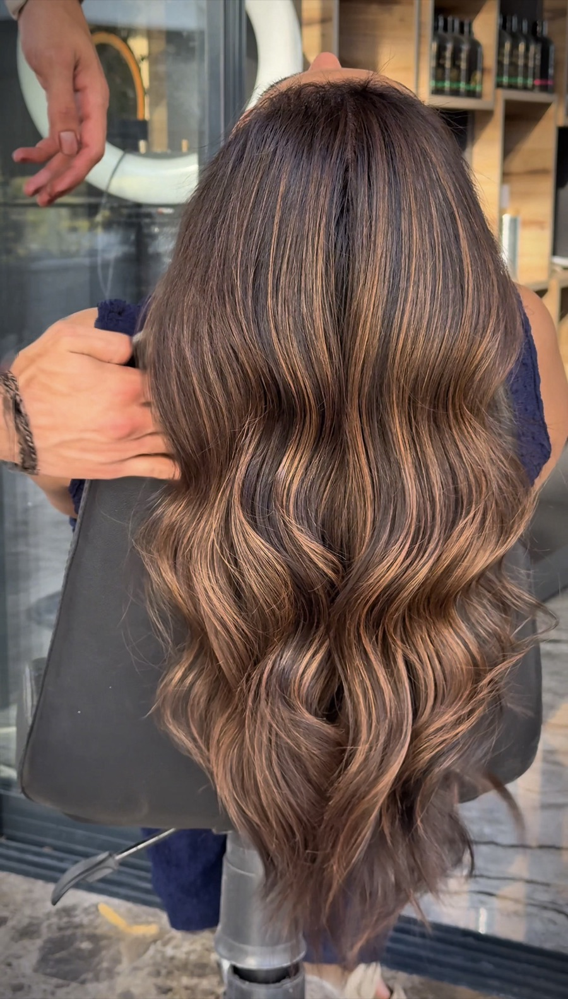
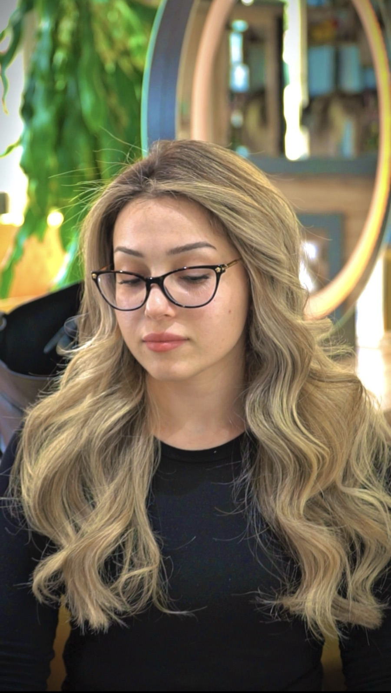
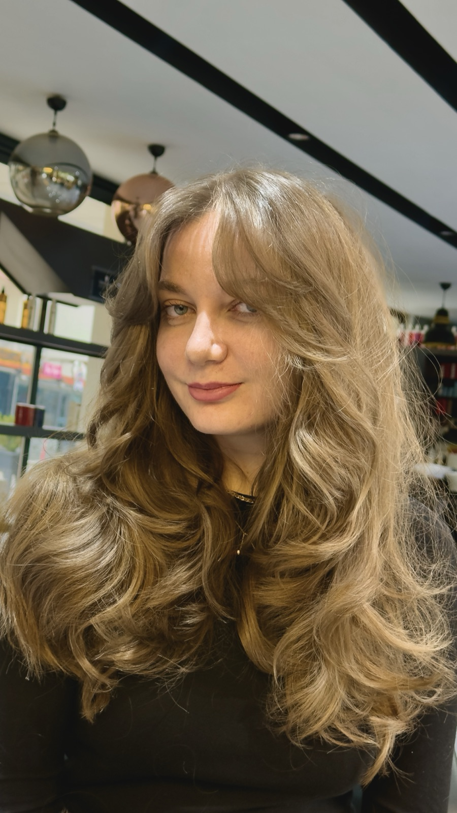
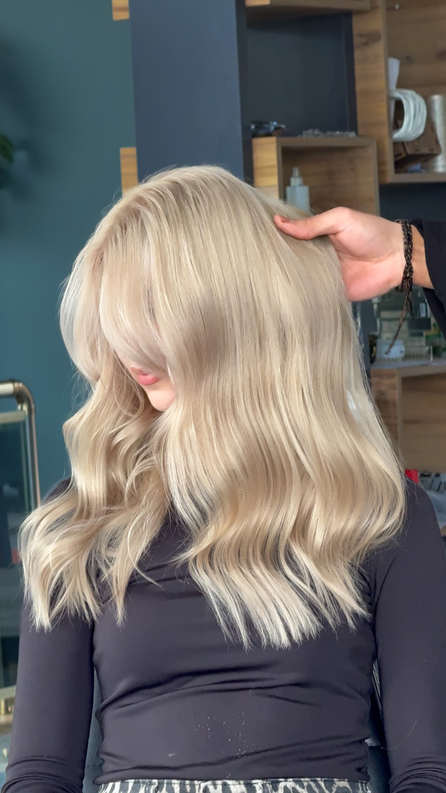
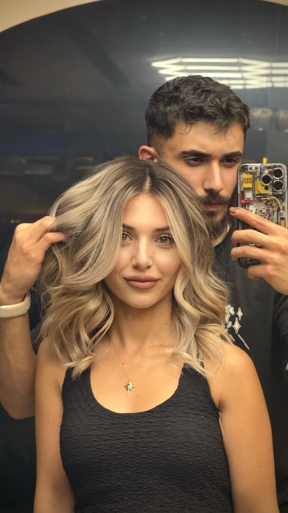

Saç kesimi
Saçınızın yapısına, yüz hatlarınıza ve günlük rutininize uygun kesim ve şekillendirme.

Hizmetlerimiz
Ahievran Mahallesi'ndeki salonumuzda bayan kuaförlüğünün temel işlemlerini, saçınıza ve yaşam tarzınıza göre birlikte planlıyoruz.
Saçınızın yapısına, yüz hatlarınıza ve günlük rutininize uygun kesim ve şekillendirme.
Dip boya, balyaj ve ombre gibi işlemler. Dip boya yaklaşık 1,5 saat, balyaj ve ombre saç uzunluğuna göre 3–4 saat sürer.
Yıpranmış ve kuru saç için profesyonel bakım işlemleri; evde devam etmeniz için ürün önerisi.
Düğün, nişan ve özel günler için saç tasarımı. Düğünden 2–4 hafta önce prova randevusu planlıyoruz.
Ürünlerimiz
Şampuandan boyaya kadar işlemlerimizde kullandığımız profesyonel ürünler. Evde bakım için hangisinin size uygun olduğunu randevunuzda sorabilirsiniz.

Hakkımızda
Her randevu kısa bir sohbetle başlar: saçınızın yapısı, günlük rutininiz ve ne kadar zaman ayırmak istediğiniz. Sonra size gerçekten uyan kesimi ve rengi birlikte seçiyoruz.
Salonumuzda aynı anda sınırlı sayıda misafir ağırlıyoruz; bu yüzden bekleme yok, telaş yok.
Galeri






Sık Sorulanlar
Uygun boşluk olduğunda evet, ancak bekleme yaşamamanız için randevu almanızı öneriyoruz.
Dip boya yaklaşık 1,5 saat, balyaj ve ombre gibi işlemler saç uzunluğuna göre 3–4 saat sürer.
Evet. Düğünden 2–4 hafta önce bir prova randevusu planlıyoruz.
En az 24 saat önce WhatsApp veya telefon ile haber vermeniz yeterli.
WhatsApp'tan yazın, size en uygun saati birlikte belirleyelim.
İletişim
Telefon 0546 601 32 41
WhatsApp Mesaj gönder
Instagram @adilcobaan